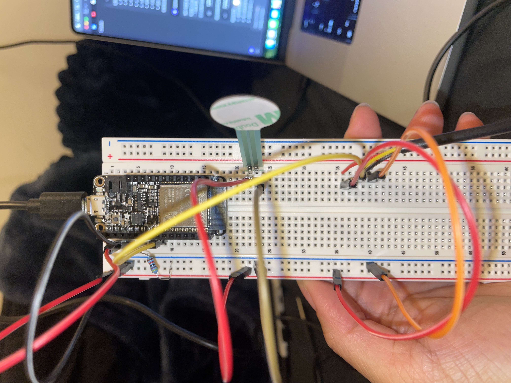

Phase 1: Initial Setup and Temperature Sensor Test

Initial wiring attempt with DS18B20 temperature sensor
Initial Temperature Sensor Code
Results:
Temperature sensor reading: -127.00 (Error reading sensor)